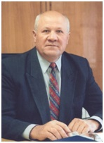

Травов Василий Павлович, 1946 года рождения, президент регионального объединения работодателей Ставропольского края «Конгресс деловых кругов Ставрополья».
Василий Павлович за 40 лет работы в Ставропольском крае внес значительный вклад в социально-экономическое развитие и благоустройство города-курорта Пятигорска. Под его руководством построено и реконструировано 6 школ, 4 поликлиники, терапевтический корпус городской больницы, городская библиотека, дом быта, учебно-производственный комбинат. Введены значимые для города-курорта объекты: лечебные корпуса десяти санаториев, проведена реконструкция воинского мемориала, здания штаба поста № 1, ряда улиц и площадей, общекурортных объектов, что позволило значительно улучшить облик города, создать благоприятные условия для жителей, увеличить количество отдыхающих и повысить качество их обслуживания.